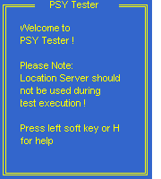
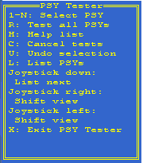
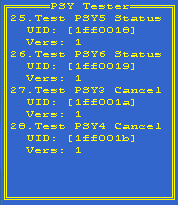
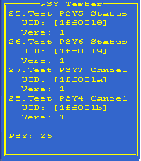
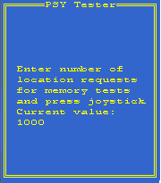
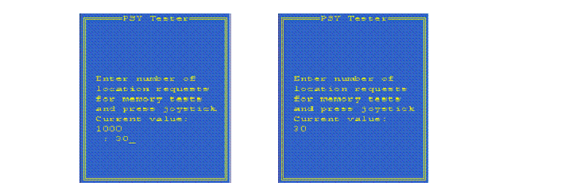
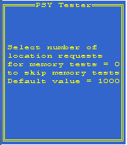

Run PSY Tester
This section describes how to run PSY tester.
PSY Tester is run to select and test PSY(s).
PSY Tester is implemented as a console application, which means that it has a limited UI. This is because it must be possible to use the same implementation of PSY Tester independently of the graphical UI of the phone on which it runs.
The information in this document about which keys to press is valid for a Series 60 target device. For a translation list of the keys to be used when running the PSY Tester application on the emulator, see the key table in PSY Tester Reference.
- Start PSY Tester to show the Start View Start the PSY Tester application psytester.exe from a file browser or eshell. The Start View of Figure 1 is displayed.
Figure 1.
Figure 1: PSY Tester Start View

The Start View is displayed every time PSY Tester is started. A user can obtain help be pressing the left soft key or H to show the Help View of Figure 2. This Help View shows the different commands that are used to control PSY Tester. PSY Tester Reference describes the commands in this menu. Figure 2.
Figure 2: PSY Tester Help View.

- List the installed PSYs and select one for test Press "Joystick Right" ("Arrow Right" in an emulator) to shift view. The PSY Tester List View is shown (figure 3) The List View lists the PSYs from index 1 to 4. If there are more PSYs installed than can be shown on one screen, they are listed when the user moves the joystick down (Arrow Down in an emulator).
Figure 3.
Figure 3: PSY Tester List View.

By default, all installed PSYs are listed. If any of the installed PSYs must not be shown in the PSY Tester List view, the UID of the PSY can be specified in the PSY Tester resource file under r_pos_psy_tester_psy_uid_excludes_list. The PSY Tester List View shows PSY implementation information that has been retrieved from PSY resource files. The information presented for each PSY is as follows:
The first row shows the display name for the PSY as specified in the PSY resource file as display_name. In figure 3 the PSY display name for the PSY with index 25 has display_name = "Test PSY5
Status" in the PSY resource file. If the PSY name is too long to fit on one row, the extra characters are not shown.
The second row shows the implementation UID for the PSY, specified in the PSY resource file as implementation_uid. In figure 3, the implementation UID for the PSY with index 25 has implementation_uid = 0x01ff0018 in the PSY resource file.
The third row shows the version number of the PSY, specified in the resource file as version_no. In figure 3, the version number for the PSY with index 25 is specified as version_no = 1 in the resource file.
To select PSY "Test PSY5 Status" (which has index number 25 in the list in figure 3) for testing, type 25. In response PSY: 25 is displayed as shown in Figure 4. Figure 4.
Figure 4: PSY Tester List View with selected PSY.

- (Optional) Change the number of location requests for the memory consumption test. Press "Joystick Right" ("Arrow Right" in an emulator) to show the PSY Tester Settings View (figure 5).
Figure 5.
Figure 5: PSY Tester Settings View.

In Settings View the user can override the default number of location requests made for the memory consumption test. The memory consumption test requires that PSY Tester makes a large number of requests. A default value of 1000 requests is defined in the PSY Tester configuration file. Such a large number of requests significantly affects the testing time. The user can override this default value in the Settings View. To change the default number of requests, enter a number and press the joystick (press Enter on an emulator). Figure 6 shows an example or reducing the number of requests to 30. Figure 6.
Figure 6: Overriding the number of location requests for the
memory consumption test.

The value typed in the PSY Tester Settings view is used for all memory tests until the user selects to override the value with a new one or until PSY Tester is restarted. If 0 is selected as the number of location requests for the memory consumption test, it is not performed. The default value from the resource file is used every time PSY Tester is started if the user does not override the value as described above. A help view (figure 7) available for the PSY Tester Settings view by typing H. This help view gives information on how to turn off memory tests (by selecting 0) as well as information on the default value for the number of location requests for memory consumption test (1000). Figure 7.
Figure 7: Help view for the PSY Tester Settings view

Shift back to the PSY Tester List View by pressing Joystick Left (Arrow Left).
- Start the tests After selecting a PSY for test, press the joystick (Enter in emulator) to start the tests. A message is shown that states that the tests are running, followed later by a message when the tests are complete. The results for the tests are available in the log file. For log file details see Read the test logs.
The PSY Tester runs the tests and writes test log files.
When the tests are finished, the user reads the log files to see the test results.
See Read the test logs for more information.
Copyright ©2010 Nokia Corporation and/or its subsidiary(-ies).
All rights
reserved. Unless otherwise stated, these materials are provided under the terms of the Eclipse Public License
v1.0.